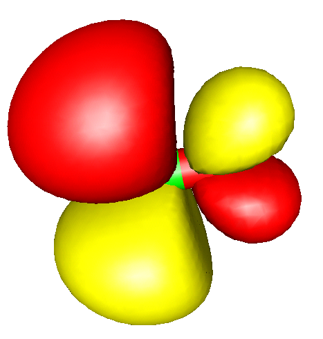

Orbital and Density Plots¶
There are two types of graphics output possible in ORCA - two
dimensional contour plots and three dimensional surface plots. The
quantities that can be plotted are the atomic orbitals, molecular
orbitals, natural orbitals, the total electron density or the total spin
density. The graphics is controlled through the block %plots.
Contour Plots¶
The contour plots are controlled via the following variables
%plots
#*** the vectors defining the cut plane
v1 0, 0, 0 # pointer to the origin
v2 1, 0, 0 # first direction
v3 0, 1, 0 # second direction
#*** alternative to defining vectors. Use atom coordinates
at1 0 # first atom defining v1
at2 2 # second atom defining v2
at3 4 # third atom defining v3
#*** resolution of the contour
dim1 45 # resolution in v2-direction
dim2 45 # resolution in v3-direction
#*** minimum and maximum values along v2 and v3
min1 -7.0 # min value along v2 in bohr
max1 7.0 # min value along v2 in bohr
min2 -7.0 # min value along v3 in bohr
max2 7.0 # max value along v3 in bohr
#***
UseCol true # Use color in the plot (blue=positive,
# red=negative)
Skeleton true # Draw Skeleton of the molecule of those
# atoms that are in or close to the cut
# plane
Atoms true # Draw the atoms that are in the plane as
# circles
NCont 200 # Number of contour levels.
ICont 0 # Draw NCont equally space contours
1 # Start with 1/NCont and the double the
# value for each additional contour
#*** the format of the output file
Format Origin # straight ascii files
HPGL # plotter language files
#*** the quantities to plot
MO("MyOrbital-15xy.plt",15,0); # orbital to plot
v3= 0, 0, 1 # change cut plane
MO("MyOrbital-16xz.plt",16,0); # orbital to plot
ElDens("MyElDens.plt"); # Electron density
SpinDens("MySpinDens"); # Spin density
end
The input was:\
v1 = 0, 0, 0; v2 = 1, 0, 0; v3 = 0, 1, 0; min1= -8; max1= 8; min2= -8; max2= 8; dim1= 50; dim2=50; Format = HPGL; NCont = 200; Icont = 1; Skeleton= true; Atoms = true; MO("Test-DFT-H2CO+-MO7xy.plt",7,1);
NOTE:
-
The command
MO("MyOrbital-15xy.plt",15,0);is to be interpreted as follows:MOmeans that a MO is to be plotted. \"MyOrbital-15xy.plt\" is the file to be created.15is the number of the MO to be drawn (remember: counting starts at orbital 0!) and0is the operator the orbital belongs to. For a RHF (or RKS) calculation there is only one operator which has number 0. For a UHF (or UKS) calculation there are two operators - the spin-up orbitals belong to operator 0 and the spin-down orbitals belong to operator 1. For ROHF calculations there may be many operators but at the end all orbitals will be collected in one set of vectors. Thus the operator is always \(=\)0 in ROHF. -
The
ELDENS(plot of the total electron density) andSPINDENS(plot of the total spin density) commands work analogous to theMOwith the obvious difference that there is no MO or operator to be defined. -
Analogous to
ELDENSandSPINDENS, post-HF densities can be selected using the keyword extended by the respective method.ELDENSMDCI/SPINDENSMDCIwill plot the MDCI density, of course only if is available.ELDENSMP2REandSPINDENSMP2REwill work with the MP2 relaxed density, whileELDENSMP2URandSPINDENSMP2URwill yield the MP2 unrelaxed density. The OO-RI-MP2 densities can be requested byELDENSOOorSPINDENSOO. Similarly, AutoCI relaxed densities can be plotted by using theELDENSAUTOCIREandSPINDENSAUTOCIREkeywords, and the unrelaxed densities by usingELDENSAUTOCIURandSPINDENSAUTOCIUR. -
The
UNOoption plots natural orbitals of the UHF wavefunction (if they are available). No operator can be given for this command because there is only one set of UHF-NOs. Similarly, usingUCOoption can be used to plot the UHF corresponding orbitals. -
If the program cannot find the plot module ("Bad command or filename") try to use
ProgPlot="orca_plot.exe"in the%methodblock or point to the explicit path. -
The defining vectors
v2andv3are required to be orthonormal. The program will use a Schmidt orthonormalization ofv3with respect tov2to ensure orthonormality. If you do not like this make sure that the input vectors are already orthogonal. -
at1,at2andat3can be used instead ofv1,v2andv3. In this case sayv1is taken as the coordinates of atomat1. Mixed definitions where sayv2is explicitly given and sayv3is defined throughat3are possible. A value of -1 forat1,at2andat3signals thatat1,at2andat3are not to be used. This type of definition may sometimes be more convenient. -
Variables can be assigned several times. The "actual" value a variable has is stored together with the command to generate a plot (
MO,ELDENSorSPINDENS). Thus after each plot command the format or orientation of the plot can be changed for the next one. -
The
Originformat produces a straightforward ASCII file with x, y and z values that can be read into your favorite contour plot program or you could write a small program that reads such files and converts them to whatever format is more appropriate for you. -
I usually use Word for Windows to open the
HPGLfiles which appears to work fine. Double clicking on the graphics will allow modification of linewidth etc. For some reason that is not clear to me some graphics programs do not like the HPGL code that is produced by ORCA. If you are an HPGL expert and you have a suggestion - let me know.
Surface Plots¶
General Points¶
Surface plots can, for example, be created through an interface to Leif Laaksonen's gOpenMol program. This program can be obtained free of charge over the internet. It runs on a wide variety of platforms, is easy to use, produces high quality graphics and is easy to interface1 - thank you Leif for making this program available!
The relevant [PLOTS] section looks like this:
%output
XYZFile true
end
%plots
dim1 45 # resolution in x-direction
dim2 45 # resolution in y-direction
dim3 45 # resolution in z-direction
min1 -7.0 # x-min value in bohr
max1 7.0 # x-min value in bohr
min2 -7.0 # y-min value in bohr
max2 7.0 # y-max value in bohr
min3 -7.0 # z-min value in bohr
max3 7.0 # z-max value in bohr
Format gOpenMol_bin # binary *.plt file
gOpenMol_ascii # ascii *.plt file
Gaussian_Cube # Gaussian-cube format
# (an ASCII file)
MO("MyOrbital-15.plt",15,0); # orbital to plot
MO("MyOrbital-16.plt",16,0); # orbital to plot
UNO("MyUNO-48.plt",48); # UHF-NO to plot
ElDens("MyElDens.plt"); # Electron density
SpinDens("MySpinDens.plt"); # Spin density
end
Note
- it is admittedly inconvenient to manually input the dimension of the
cube that is used for plotting. If you do nothing such that
min1 = max1 = min2 = max2 = min3 = max3=0then the program will try to be smart and figure out a good cube size by itself. It will look at the minimum and maximum values of the coordinates and then add 7 bohrs to each dimension in the hope to properly catch all wavefunction tails.
Sometimes you will want to produce orbital plots after you looked at the
output file and decided which orbitals you are interested in. In this
case you can also run the orca_plot program in a crude interactive
form by invoking it as:
This will provide you with a subset of the capabilities of
this program but may already be enough to produce the plots you want to
look at. Note that for the name of the GBW-file you may as well input
files that result from natural orbitals (normally *.uno),
corresponding orbitals (normally *.uco) or localized orbitals
(normally *.loc).
Once in the interactive program, by entering '1' for 'Enter type of plot,' you will
access a list of available plot capabilities relevant to your current calculation
file (MyGBWFile.gbw):
-----------------------------------------------------------------------
Plot-Type is presently: 1
-----------------------------------------------------------------------
Searching for Ground State Electron or Spin Densities: ...
-----------------------------------------------------------------------
1 - molecular orbitals
2 - (scf) electron density ...... (scfp ) => AVAILABLE
3 - (scf) spin density ...... (scfr ) => AVAILABLE
4 - natural orbitals
5 - corresponding orbitals
6 - atomic orbitals
7 - mdci electron density ...... (mdcip ) - NOT AVAILABLE
8 - mdci spin density ...... (mdcir ) - NOT AVAILABLE
9 - OO-RI-MP2 density ...... (pmp2re ) - NOT AVAILABLE
10 - OO-RI-MP2 spin density ...... (pmp2ur ) - NOT AVAILABLE
11 - MP2 relaxed density ...... (pmp2re ) - NOT AVAILABLE
12 - MP2 unrelaxed density ...... (pmp2ur ) - NOT AVAILABLE
13 - MP2 relaxed spin density ...... (rmp2re ) - NOT AVAILABLE
14 - MP2 unrelaxed spin density ...... (rmp2ur ) - NOT AVAILABLE
15 - LED dispersion interaction density ...... (ded21 ) - NOT AVAILABLE
16 - Atom pair density
17 - Shielding Tensors
18 - Polarisability Tensor
19 - AutoCI relaxed density ...... (autocipre ) - NOT AVAILABLE
20 - AutoCI unrelaxed density ...... (autocipur ) - NOT AVAILABLE
21 - AutoCI relaxed spin density ...... (autocirre ) - NOT AVAILABLE
22 - AutoCI unrelaxed spin density ...... (autocirur ) - NOT AVAILABLE
-----------------------------------------------------------------------
Searching for State or Transition State AO Electron Densities: ...
-----------------------------------------------------------------------
23 - CIS unrelaxed transition AO density ...... (Tdens-CIS ) - NOT AVAILABLE
24 - ROCIS unrelaxed transition AO density ...... (Tdens-ROCIS ) - NOT AVAILABLE
25 - CAS unrelaxed transition AO density ...... (Tdens-CAS ) - NOT AVAILABLE
26 - ICE unrelaxed transition AO density ...... (Tdens-ICE ) - NOT AVAILABLE
27 - MRCI unrelaxed transition AO density ...... (Tdens-MRCI ) - NOT AVAILABLE
28 - LFT unrelaxed transition AO density ...... (Tdens-LFT ) - NOT AVAILABLE
-----------------------------------------------------------------------
Searching for State or Transition State MO Electron Densities: ...
-----------------------------------------------------------------------
29 - CIS unrelaxed transition MO density ...... (Tdens-CISMO ) - NOT AVAILABLE
30 - ROCIS unrelaxed transition MO density ...... (Tdens-ROCISMO ) - NOT AVAILABLE
31 - CAS unrelaxed transition MO density ...... (Tdens-CASMO ) - NOT AVAILABLE
32 - ICE unrelaxed transition MO density ...... (Tdens-ICEMO ) - NOT AVAILABLE
33 - MRCI unrelaxed transition MO density ...... (Tdens-MRCIMO ) - NOT AVAILABLE
34 - LFT unrelaxed transition MO density ...... (Tdens-LFTMO ) - NOT AVAILABLE
-----------------------------------------------------------------------
Searching for State or Transition State QDPT AO Electron Densities: ...
-----------------------------------------------------------------------
35 - CAS QDPT unrelaxed transition AO density ...... (Tdens-CASQDSOC ) - NOT AVAILABLE
36 - DCDCAS QDPT unrelaxed transition AO density ...... (Tdens-CASDCDQDSOC ) - NOT AVAILABLE
37 - CAS CUSTOM E QDPT unrelaxed transition AO density ...... (Tdens-CASCUSTOMEQDSOC ) - NOT AVAILABLE
38 - NEVPT2 QDPT unrelaxed transition AO density ...... (Tdens-CASPTQDSOC ) - NOT AVAILABLE
39 - QDNEVPT2 QDPT unrelaxed transition AO density ...... (Tdens-CASQDPTQDSOC ) - NOT AVAILABLE
40 - MRCI QDPT unrelaxed transition AO density ...... (Tdens-MRCIQDSOC ) - NOT AVAILABLE
41 - ROCIS QDPT unrelaxed transition AO density ...... (Tdens-ROCISQDSOC ) - NOT AVAILABLE
42 - LFT QDPT unrelaxed transition AO density ...... (Tdens-LFTQDSOC ) - NOT AVAILABLE
The \(\pi^{\ast}\) orbital of H\(_{2}\)CO as calculated by the RI-BP/VDZP method.
Info
The visualization of fractional occupation weighted densities (FOD) is described in fod.plot.
Interface to gOpenMol¶
Here is a short summary of how to produce these plots with gOpenMol:
-
First of all the molecular geometry must be save by choosing
XYZFile=truein the[OUTPUT]block. This will produce a straightforward ascii file containing the molecular geometry (or simply! XYZFile). -
After having produced the plot files start gOpenMol and choose File-Import-Coords . In the dialog choose the XYZ format and select the file. Then press apply and dismiss . The molecule should now be displayed in the graphics window.
-
You can change the appearance by choosing View-Atom type .
-
The color of the background can be changed with Colour-Background .
-
After having done all this choose Plot-Contour and select the Browse button to select the appropriate file. Then press Import File to read it in. NOTE: you can only directly read files that were produced in
gOpenMol_binformat. If you have chosengOpenMol_asciiyou must first use the gOpenMol file conversion utility under Run-Pltfile (conversion) to produce the binary plt file. -
After having read the plt file choose the appropriate isocontour value (one for the positive and one for the negative lobes of an orbital) and select suitable colors via Colour(n) to the right of the isocontour value. The Details button allows you to choose between solid and mesh representation and other things.
-
Once the plot looks the way you like, use File-Hardcopy to produce a publication quality postscript or bitmap picture that can be imported into any word processing or graphics software.
Interface to Molekel¶
The Molekel program (http://ugovaretto.github.io/molekel/) is another beautiful and easy-to-use graphics tool that is recommended in combination with ORCA. You may even find it a little easier to use than gOpenMol but this may be a matter of personal taste. In order to produce plots with Molekel follow the following procedure:
-
Produce Gaussian-Cube files (and optionally also an XYZ file) with ORCA as described above.
-
Start Molekel and use the right mouse button to obtain the Load menu.
-
Choose the format xyz to load your coordinates
-
Use the right mouse button again to select the Surface menu
-
Choose the format "Gaussian Cube" and click Load Surface
-
Click on Both Signs if you visualize an orbital or spin density
-
Select a suitable contour value in the Cutoff box.
-
Click on Create Surface. That's it!
-
In the Color menu (also available via the right mouse button) you can adjust the colors and in the main menu the display options for your molecule. Default settings are in a startup file that you can modify to suit your taste. More details are in the Molekel manual -- check it out; it can do many other useful things for you too!
Visualization of three-dimensional representation of MOs, natural orbitals,
electron densities, and spin densities is usually more intuitive than
examining MO coefficients and it is is described in detail in section
utilities.plots. The files necessary for such visualizations
can be readily generated with ORCA in various ways and then opened in
visualization software such as gOpenMol and Molekel.2
In the following example, we briefly describe visualization of MOs.
To visualize MOs withgOpenMol, the plt file of MOs can be generated in the
gOpenMol_bin format from the gbw file using orca_plot utility program or
directly from the ORCA run through the %plots block of the input file:
%plots
#*** the vectors defining the cut plane
v1 0, 0, 0 # pointer to the origin
v2 1, 0, 0 # first direction
v3 0, 1, 0 # second direction
#*** alternative to defining vectors. Use atom coordinates
at1 0 # first atom defining v1
at2 2 # second atom defining v2
at3 4 # third atom defining v3
#*** resolution of the contour
dim1 45 # resolution in v2-direction
dim2 45 # resolution in v3-direction
#*** minimum and maximum values along v2 and v3
min1 -7.0 # min value along v2 in bohr
max1 7.0 # min value along v2 in bohr
min2 -7.0 # min value along v3 in bohr
max2 7.0 # max value along v3 in bohr
#***
UseCol true # Use color in the plot (blue=positive,
# red=negative)
Skeleton true # Draw Skeleton of the molecule of those
# atoms that are in or close to the cut
# plane
Atoms true # Draw the atoms that are in the plane as
# circles
NCont 200 # Number of contour levels.
ICont 0 # Draw NCont equally space contours
1 # Start with 1/NCont and the double the
# value for each additional contour
#*** the format of the output file
Format Origin # straight ascii files
HPGL # plotter language files
#*** the quantities to plot
MO("MyOrbital-15xy.plt",15,0); # orbital to plot
v3= 0, 0, 1 # change cut plane
MO("MyOrbital-16xz.plt",16,0); # orbital to plot
ElDens("MyElDens.plt"); # Electron density
SpinDens("MySpinDens"); # Spin density
end
In this input file, the MO("CO-4.plt",4,0); command is used to evaluare MO
labeled as 4 for operator 0 and then to strore it in the \"CO-4.plt\" file.
For RHF and ROHF, one should always use operator 0. For UHF, operators 0 and 1
correspond to spin-up and spin-down orbitals, respectively.
When the produced plt files are opened with gOpenMol (see section
plots.surface for details), the textbook-like \(\pi\) and \(\pi^{\ast}\) MOs
of the CO molecule are visualized as in Figure fig:629.
AB


(a) \(\pi\) and (b) \(\pi^\ast\) MOs of the CO molecule obtained from the interface of ORCA to gOpenMol.
If the gOpenMol_ascii file format was requested, gOpenMol conversion utility
or some other tools might then be needed to convert this human-readable file to
the machine-readable gOpenMol_bin format.
In order to use the interface to Molekel, an ASCII file in the
Cube or Gaussian_Cube format needs to be generated. Such ASCII files can be
actually transferred between platforms. The Cube format can be requested in
the %plots block as:
%output
XYZFile true
end
%plots
dim1 45 # resolution in x-direction
dim2 45 # resolution in y-direction
dim3 45 # resolution in z-direction
min1 -7.0 # x-min value in bohr
max1 7.0 # x-min value in bohr
min2 -7.0 # y-min value in bohr
max2 7.0 # y-max value in bohr
min3 -7.0 # z-min value in bohr
max3 7.0 # z-max value in bohr
Format gOpenMol_bin # binary *.plt file
gOpenMol_ascii # ascii *.plt file
Gaussian_Cube # Gaussian-cube format
# (an ASCII file)
MO("MyOrbital-15.plt",15,0); # orbital to plot
MO("MyOrbital-16.plt",16,0); # orbital to plot
UNO("MyUNO-48.plt",48); # UHF-NO to plot
ElDens("MyElDens.plt"); # Electron density
SpinDens("MySpinDens.plt"); # Spin density
end
To visualize MOs strored in the *.cube file, start Molekel and,
via a right mouse click, load the *.xyz file and/or the *.cube file.
lternatively, navigate to the surface menu, select the "gaussian-cube" format,
and load the surface. For orbitals, click the "both signs" button and select
a countour value in the "cutoff" field. Then, click "create surface".
The colour schemes and other fine details of the plots can be easily
adjusted as desired. Finally, create files via the "snapshot" feature
of Molekel. Figure fig:631 demonstrates a Molekel variant
of Figure fig:629.
AB


(a) \(\pi\) and (b) \(\pi^\ast\) MOs of the CO molecule obtained from the interface of ORCA to Molekel.
It is worth noting that there are several other freeware programs, such as
UCSF CHIMERA, that can read Gaussian_Cube files and provide high-quality plots.
In some situations, visualization of the electronic structure in terms of localized molecular orbitals might be quite helpful. As unitary transformations among occupied orbitals do not change the total wavefunction, such transformations can be applied to the canonical SCF orbitals with no change of the physical content of the SCF wavefunction. The localized orbitals correspond more closely to the pictures of orbitals that chemists often enjoy to think about. Localized orbitals according to the Pipek-Mezey population-localization scheme are quite easy to compute. For example, the following run reproduces the calculations reported by Pipek and Mezey in their original paper for the N\(_{2}\)O\(_{4}\) molecule.
Based on the output file of this job, localized MOs consist of six core like orbitals (one for each N and one for each O), two distinct lone pairs on each oxygen, a \(\sigma\)- and a \(\pi\)-bonding orbital for each N-O bond and one N-N \(\sigma\)-bonding orbital which corresponds to the dominant resonance structure of this molecule. You will also find a file with the extension.loc in the directory where you run
the calculation. Like the standard gbw file, it can used to extract
files for plotting or as input for another calculation (warning!
The localized orbitals have no well defined orbital energy. If you do
use them as input for another calculation use GuessMode=CMatrix
in the %scf block).
-
There were some reports of problems with the program on Windows platforms. Apparently it is better to choose the display settings as "true color 32 bit" rather than "high 16 bit". Thanks to Thomas Brunold! ↩
-
The
Molekeldevelopers ask for the following citation -- please do as they ask:MOLEKEL 4.2, P. Flukiger, H.P. Lüthi, S. Portmann, J. Weber, Swiss Center for Scientific Computing, Manno (Switzerland), 2000-2006.
S. Portmann, H.P.Łüthi. MOLEKEL: An Interactive Molecular Graphics Tool. CHIMIA (2000), [54]{.underline}, 766-770. The program appears to be maintained by Ugo Varetto at this time. ↩